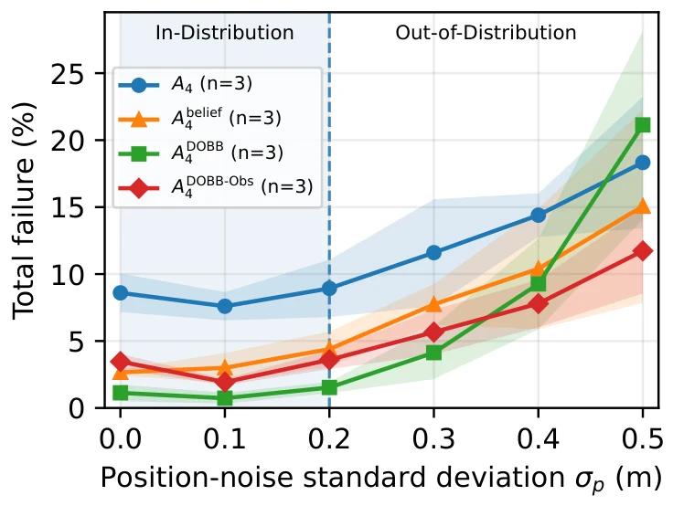

DOBB：把状态不确定性写进方向性安全边界，而不是丢给策略去猜
DOBB: Dynamic Oriented Bounding Boxes for Multi-Agent Collision Avoidance under State Uncertainty and Heterogeneous Dynamics
结论：把“估计协方差 + 执行器极限”映射成方向性安全边距，比把它们作为特征喂给策略更抗分布漂移；代价是高不确定性下失败从碰撞转为超时。
mean total failure
collision failure ceiling
failure under actuation shift
作者、单位与技术谱系 · Research context
作者与单位
研究脉络
- GA3C-CADRL（Everett、Chen、How，IEEE Access 2021）方法基座关系：策略网络、邻居 LSTM、11 动作空间与训练流程全部沿用该框架[论文 §V-A]
- Oriented Bounding Capsule（Zhu 等，RA-L 2022）方法上游关系：最接近的几何前身：用有向胶囊表达形状异构与速度相关风险[论文 §II]
- 本篇推进本篇推进关系：把“协方差 + 执行器极限”统一进三层安全几何，并配一个分层侵占奖励[论文 §VI-A 表 V]
合作网络
- University of Notre Dame（CSE）University of Notre Dame, CSE → Pedro Antonio Alarcon Granadeno、Jane Cleland-Huang关系：共同署名（同一院系）[arXiv 摘要页]
- 本文 ↔ GA3C-CADRL 开源实现本文 → GA3C-CADRL（Everett 等）关系：技术依赖（策略骨架与训练流程）[论文 §V-A]
- NSF 资助 1931962US National Science Foundation → 本文关系：资助关系（基金号 1931962）[arXiv 摘要页]
作者身份、院系与基金号来自论文首页；技术依赖来自正文对 GA3C-CADRL 的明确说明。论文未声明任何师生或导师关系，本文也不据此推断两人之间的指导关系。
方法本质拆解 · What actually changed
是不是微调？
不是微调预训练模型，而是在 GA3C-CADRL 框架内重新训练策略：网络结构、邻居 LSTM 与 11 个速度/航向动作都保持不变，只替换观测描述子与非终止奖励；每种配置独立训练三次并各选一个验证集 checkpoint。
有没有额外约束？
约束体现在三处：动作不再是瞬时生效，而要经过带加速度/加加速度/偏航率/延迟上限的受约束动力学；占据层用 95% Bonferroni 界膨胀半径；刹车层用有限 jerk 与响应延迟积分真实停车距离，替代教科书式 v²/2a。
推理/后端到底做了什么？
推理时每个决策步重算三层矩形与两两特征，没有额外优化或求解器；策略仍是一次前向。DOBB 只依赖“估计状态 + 协方差 + 执行器参数”，因此可以接在任意估计器之后，不要求特定后端。
方法本质是什么？
本质上是一次“不确定性到几何”的接口重写：把不可解释的协方差与执行器极限折算成策略能直接读到的间距与侵占程度，使同一套避让规则在不同噪声/执行器条件下保持一致的物理解释。它没有处理的是非高斯、相关或多模态的估计误差。
输入是估计状态、协方差与执行器参数；改变的位置是策略观测与奖励里的“安全几何”；约束动作是三层嵌套矩形构造与最内层侵占惩罚；直接效果是分布外条件下碰撞失败被压到 2% 量级，代价是超时增加。

桥接价值Bridge
桥接价值
我们的后端输出的是位姿与协方差，但下游规划往往只拿到点估计——这篇正好补上了“协方差怎么变成可执行的几何约束”这一步。它给出的方向性膨胀（沿机体前向/侧向分别按 Σ 投影）比各向同性膨胀更省自由空间，这个思路可以直接用在我们的动态避障与安全走廊构造上。
方法与模块Method
方法摘要
每步决策前，把估计状态 x̂、协方差 Σ、执行器参数 η 与上一条指令映射成三层嵌套矩形：占据层用95% Bonferroni 界把位置协方差投影到机体前向/侧向并加到半径上；投影层把该footprint 按受约束动力学前推一步后取外包矩形；刹车预留层再按有限 jerk 与响应延迟积分出停车距离，向前延伸。两两特征由四向面间隙、SAT 有符号间隔与侵占面积组成，奖励按被侵占的最内层给不同惩罚。
可迁移模块
（1）协方差→方向性边距的投影算子：γ=2.241 的 Bonferroni 界，沿任意机体轴取 e^T Σ e，可直接复用为我们的“不确定性走廊”。（2）分层侵占奖励：occ/proj/res 三层对应“已碰撞风险/已承诺运动/刹车空间被占”，比单一距离阈值更能区分危险等级。（3）SAT + 面积侵占作为交互特征，比相对位置+速度更接近物理量，且对朝向敏感。

证据Evidence
关键证据与数字
500 个十智能体场景、每个策略独立训练 3 次：完整 DOBB 平均总失败 2.6%、碰撞均值 1.9%；Env4 中碰撞相对 A4、A4^belief、A4^DOBB-Obs 分别下降约 79%、61%、49%。执行器分布外的 Env1 中，DOBB 为 2.33%，仅几何观测为 13.8%，而按瞬时运动训练的 A1 在 Env2–Env4 失败率超过 80%。位置噪声 σ_p=0.5 m 时，A4 碰撞 18.27%、A4^belief 15.00%，DOBB 在所有测试噪声档碰撞均低于 2%。
边界与下一步Limits & Next Step
边界与风险
全部结果来自二维平面仿真，碰撞判据是圆footprint 相交，没有车体形状或三维机动；状态估计是EKF + 零均值高斯噪声，真实系统中的偏置、NLOS 与相关误差未被覆盖。惩罚权重 (0.12, 0.04, 0.01) 是手工给定且没有敏感性分析；作者也承认高不确定性下安全区域会挤占自由空间，失败转成超时，这是安全-效率权衡而非纯收益。代码目前是匿名仓库，长期可访问性待核验。
下一步实验
一，把我们因子图的边缘协方差（含位姿-速度相关项）替换掉 EKF 协方差，检验方向性边距是否仍优于各向同性膨胀；二，在三维/非圆footprint（车辆、机械臂基座）上复现三层构造，看投影层与刹车层是否仍可闭式求解；三，把“超时比例”作为显式指标，在安全与通行效率之间做 Pareto 扫描。